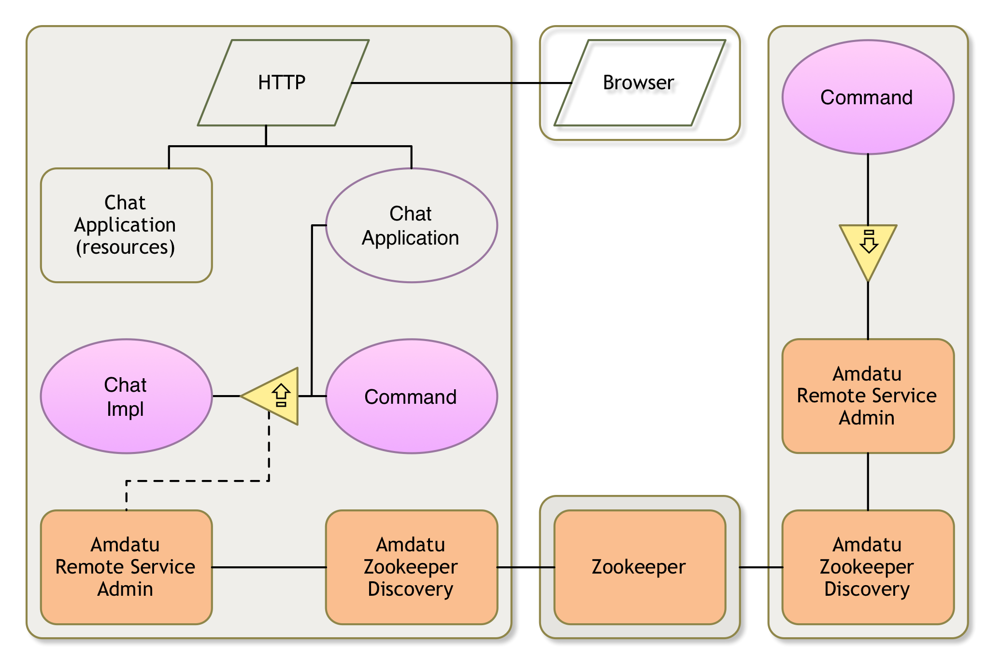

Distributing

Application
We now need to create an environment in which our Chat provider can run. Obviously, since we want to demonstrate distributed OSGi, we should then provide an environment with distribution, using the Zookeeper server we started in the previous section.
We provide this environment in an application project. We therefore neeed to create a new Bndtools project called osgi.enroute.examples.chat.application. Please use your own name, but the suffix must be .application.
Go ahead and create it.
This creates a simple Angular based application using a REST backend. We’ll ignore the GUI for now, this is saved for last.
In the runtime we need the following roles:
- A Distribution provider
- A Topology Manager
- A Discovery model
The OSGi enRoute distro does not contain the Zookeeper discovery bundle. Unfortunately, this bundle is not on Maven Central. You can find it here http://repository.amdatu.org/release/org.amdatu.remote.discovery.zookeeper/. You can drag the URL to the latest version on the Local repository in the Bndtools Repository view. This will store the bundle in your cnf/local folder and make it available to bnd.
Then click on the osgi.enroute.examples.chat.bndrun file and select the Run tab.
The application bundle should already be there, if not add it.
From the list of Available Bundles add the org.amdatu.remote.discovery.zookeeper bundle. You could also add the org.amdatu.remote.admin.http and org.amdatu.remote.topology.promiscuous bundles but if you do not have other distribution providers in your distro then the Zookeeper bundle should suffice.
Also add our Chat client (osgi.enroute.examples.chat.provider) to the list if Run Requirements. We do not want to leave this crucial bundle out!
Resolve, save.
Configuring
We need to configure the Amdatu Distribution provider. We could do this by hand like we did for the user.name of the Chat service but the configuration for the Zookeeper discoverer is rather extensive and uses really long names. So we use the standard configuration facility of an OSGi enRoute applications.
In OSGi enRoute we have the Configurer Extender. This is a bundle that watches a special file in other bundles, the configuration/configuration.json file. If this file is present, it wil parse it and turn the records in there in OSGi Configuration Admin configurations.
If you look in the ChatApplication class then you’ll see that we require the Configurer Extender there with the @RequireConfigurerExtender annotation.
So all we need to do is to add our configuration to this configuration/configuration.json file:
[
{
"service.pid":"org.amdatu.remote.discovery.zookeeper",
"org.amdatu.remote.discovery.zookeeper.connectstring"
: "localhost:6789",
"org.amdatu.remote.discovery.zookeeper.host"
:"localhost",
"org.amdatu.remote.discovery.zookeeper.rootpath"
:"/rsa",
"org.amdatu.remote.discovery.zookeeper.path"
: "org.amdatu.remote.discovery.zookeeper",
"org.amdatu.remote.discovery.zookeeper.schedule"
: 10
}
]
Debugging
We could start the osgi.enroute.examples.chat.bndrun file but then we do not get Gogo nor Xray. So let’s instead use the debug.bndrun. This bndrun file inherits the settings of the osgi.enroute.examples.chat.bndrun file but adds a set of bundles like XRay and Gogo to make the life of a debugger less horrible.
So double click osgi.enroute.examples.chat.bndrun and select the Run tab. Resolve, save, and click on the Debug button.
Zookeeper
You now should have two frameworks running:
debug.bndrun– The application on http://localhost:8080zk.bndrun– A Zookeeper server running on portlocalhost:6789
This might require some shuffling of consoles.
You could check the logs to see if there were no issues: http://localhost:8080/system/console/logs
You might want to check the Gogo shell commands:
g! members
osgi
On the Zookeeper console we could check if there is a node created. We configured the Zookeeper Configurer to use a root node /rsa.
g! zk:ls /
zookeeper
rsa
g! zk:ls /rsa
80082c04-927d-0015-12ef-f924e90c7d18
g! data /rsa/80082c04-927d-0015-12ef-f924e90c7d18
http://localhost:8080/org.amdatu.remote.discovery.zookeeper/
Obviously your unreadable numbers will look different.
Exporting
We’ll update our Chat service to be exported. We can do this because the Chat service is properly designed for distribution. The only data types we’re using are String and Message. Message is a DTO and they are explicitly designed to be serialized.
So the only thing we have to do is add the magic property to our ChatImpl class.
@Designate(ocd=Configuration.class, factory=false)
@Component(
name = "osgi.enroute.examples.chat",
property = {
"user.name=osgi",
"service.exported.interfaces=*"
}
)
public class ChatImpl implements Chat {
@Override
public boolean send(Message message) throws Exception {
System.out.printf("%s: %s%n", message.from, message.text);
return true;
}
}
The results are rather underwhelming, nothing happens.
Cluster
We now need to get the cluster up and running. You should make sure that you have no frameworks running and then select one of the following options.
With a Presenter
It this tutorial is given by a presenter then he will provide you with an IP number to his machine. If the presenter’s IP number is 172.16.8.8 and your IP number is 172.16.8.42 then your configuration/configuration.json should look like:
[
{
"service.pid":"org.amdatu.remote.discovery.zookeeper",
"org.amdatu.remote.discovery.zookeeper.connectstring":
"172.16.8.8:6789",
"org.amdatu.remote.discovery.zookeeper.host":
"172.16.8.42",
"org.amdatu.remote.discovery.zookeeper.rootpath":"/rsa",
"org.amdatu.remote.discovery.zookeeper.path":
"org.amdatu.remote.discovery.zookeeper",
"org.amdatu.remote.discovery.zookeeper.schedule":10
}
]
You can then just start debug.bndrun. The application will contact the presenter’s Zookeeper and will from there find its peers.
If You Have Friends
If you have some nearby friends then it is now easy even more easy to share than on Facebook.
Assuming you’re the primary and you’re on IP address 172.16.8.8. This will be the Zookeeper connect address to use for everybody ("org.amdatu.remote.discovery.zookeeper.connectstring). The "org.amdatu.remote.discovery.zookeeper.host", however, must be set to your machine’s IP number. Your configuration therefore looks like:
[
{
"service.pid":"org.amdatu.remote.discovery.zookeeper",
"org.amdatu.remote.discovery.zookeeper.connectstring":
"172.16.8.8:6789",
"org.amdatu.remote.discovery.zookeeper.host":
"172.16.8.8",
"org.amdatu.remote.discovery.zookeeper.rootpath":"/rsa",
"org.amdatu.remote.discovery.zookeeper.path":
"org.amdatu.remote.discovery.zookeeper",
"org.amdatu.remote.discovery.zookeeper.schedule":10
}
]
The primary must also ensure that it has a running Zookeeper. That is, it should run the zk.bndrun file we prepared earlier.
So one of your friends that has IP address 172.16.8.42 then he should configure like:
[
{
"service.pid":"org.amdatu.remote.discovery.zookeeper",
"org.amdatu.remote.discovery.zookeeper.connectstring":
"172.16.8.8:6789",
"org.amdatu.remote.discovery.zookeeper.host":
"172.16.8.42",
"org.amdatu.remote.discovery.zookeeper.rootpath":"/rsa",
"org.amdatu.remote.discovery.zookeeper.path":
"org.amdatu.remote.discovery.zookeeper",
"org.amdatu.remote.discovery.zookeeper.schedule":10
}
]
Each of you can then just start debug.bndrun. The primary will contact its local Zookeeper; the secondaries will contact the primary Zookeeper and will from there find its peers.
If You Don’t Have Friends
You should first make sure that you got one Zookeeper running. If there are no Zookeepers, run the zk.bndrun file.
You should also ensure that you got the debug.bndrun console, otherwise Run this file.
To see distributed OSGi work without friends we need to have at least two different frameworks and a Zookeeper. We can start a second framework but we cannot use the same debug.bndrun file because this would use the same storage area and same HTTP port. So we need to clone this debug.bndrun file.
Therefore, make a copy of this file and call it debug-alt.bndrun.
In this file we need to set a different storage area and ensure that we have a different HTTP port:
-include: ~osgi.enroute.examples.chat.bndrun
-runrequires.debug: ${debug-bundles}
-runstorage: generated/fw-alt
-runtrace: true
-runproperties: org.osgi.service.http.port=8081
Note: Earlier workspaces set the org.osgi.service.http.port property in such a way that it could not be overridden. You might want to check the cnf/ext/enroute-distro.bnd file. It should not contain the the property. If it does, remove it.
We don’t have to change the configuration, the default configuration works fine for both running frameworks. Just through the Web Console change the name of the local user so it will not be the same for the second framework we start.
You now need to Resolve the debug-alt.bndrun file and save it. Then click on the Debug button to start it.
Ok, you should now have three Frameworks running simultaneously in three different consoles!
debug.bndrun– The application on http://localhost:8080debug-alt.bndrun– The application on http://localhost:8081zk.bndrun– A Zookeeper server running on portlocalhost:6789
We need to change the name of the user for each framework since we use a Map to store the Chat services. If we use the same name on both frameworks they will not be able to discriminate between them. So go to http://localhost:8081/system/console/configMgr and select the Chat provider configuration. Set the user.name to something like alternate.
The two different runs can share the same configuration/configuration.json because we do not specify the port in there, the Amdatu Zookeeper discovery code will automatically detect on which port the HTTP server is running and use that one. You can verify that by going to the zk.bndrun console and checking the content of the /rsa/* nodes. It should now have 2 entries in the /rsa node. One for each framework.
g! zk:ls /rsa
508a414b-2e7e-0015-1276-b3915cbaf5a9
8050ba54-2e7e-0015-11c3-f08c767af334
g! data /rsa/508a414b-2e7e-0015-1276-b3915cbaf5a9
http://0.0.0.0:8080/org.amdatu.remote.discovery.zookeeper/
g! data /rsa/8050ba54-2e7e-0015-11c3-f08c767af334
http://localhost:8081/org.amdatu.remote.discovery.zookeeper/
Again, your number may vary (we hope).
Running
You should now be able to see the members:
g! members
osgi
alternate
You can now talk to them through the OSGi Chat command! In the primary console (debug.bndrun) our name is the default osgi name since we did not set the configuration. So from this console:
g! send osgi alternate "You should change your name!"
true
osgi: What name?
g! send osgi alternate "Ah forget it!"
Don’t wait too long for alternate to reply, you’ll have to do that yourself in the debug-alt.bndrun console.
Notes
This Zookeeper server runs in standalone mode. This is fine for testing but to make this work in an actual cluster it should be replicated.